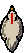
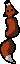

Bienvenue dans le jeu créé par les enfants de l'école des Ruires. Avant de continuer, nous t'encourageons à lire les règles du jeu.
Ce jeu est basé sur le "Poule - Renard - Vipère". Tu es une vipère et ton objectif est de capturer les renards tout en évitant les poules.
Tu peux faire avancer ta vipère en appuyant sur la touche espace et la faire tourner en bougeant ta souris. Attention, n'appuie pas sur les boutons de la souris, il suffit juste de la déplacer. Si tu es sur un écran tactile, tu peux appuyer sur l'écran pour faire avancer ton personnage, qui ira en direction de ton doigt.
Tu possède une barre d'énergie qui se vide petit à petit. Tu perdras aussi de l'énergie si une poule  te touche. Pour remplir ta jauge d'énergie, mange les pommes que tu trouveras!
Tu possède également un score qui augmente continuellement. Capturer un renard  te donnera un bonus de score. Ton meilleurs score sera sauvegardé pour les parties suivantes.
Pour terminer, même si les serpent savent généralement bien nager ou vivre en montagne, tu ne peux te déplacer que sur la terre ferme. Évite l'eau , dans laquelle tu te noierais. Les montagnes t'empêcheront simplement d'avancer